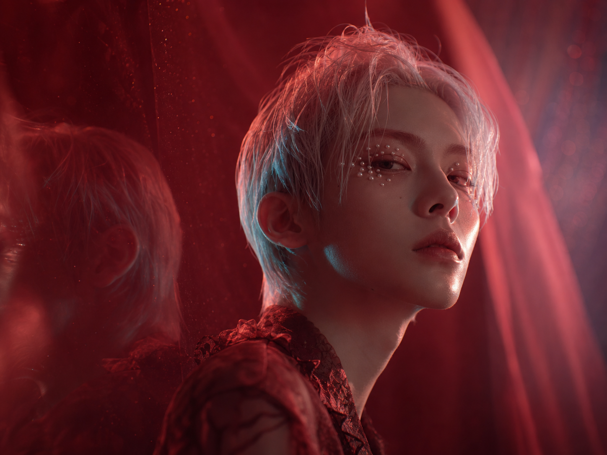
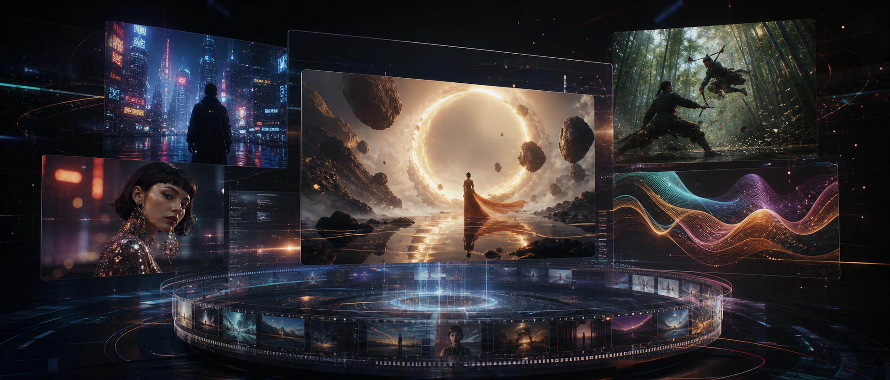
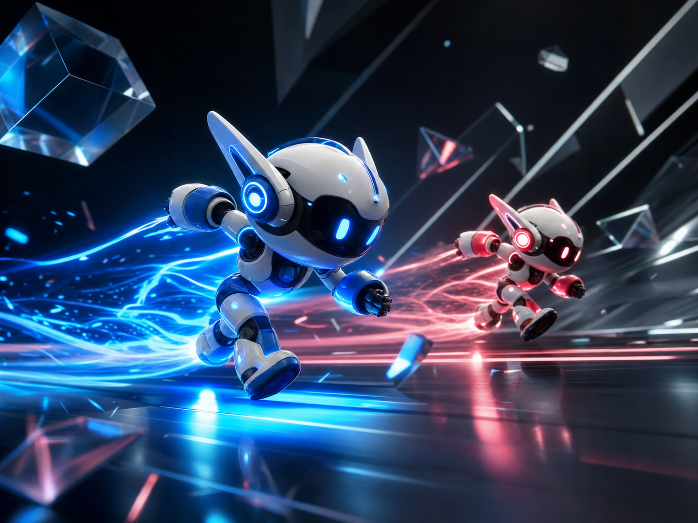
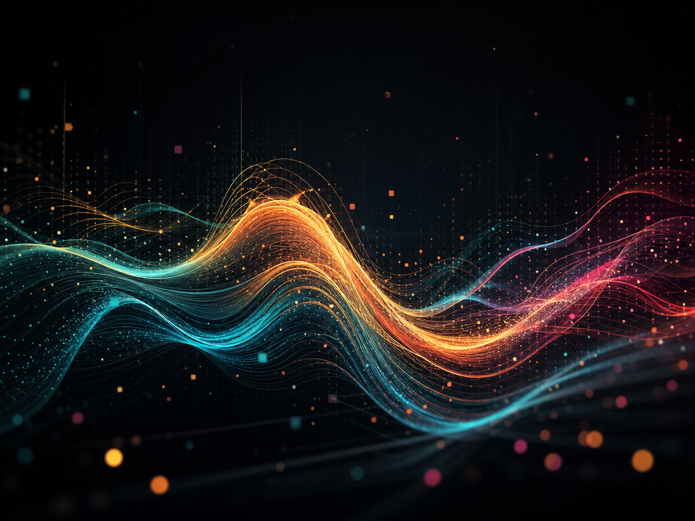

AI Image & Video Studio
把灵感，变成会发光的影像。
Copse AI 为创作者、品牌与短片团队提供图像生成、视频成片、风格迁移和工作流协作，一站完成从概念到发布的关键步骤。
Seedance 2.0
电影级运镜
34%
创作会员低至
4K
高质资产输出
Inspiration
灵感创作


Workflow
从提示词到分镜，从素材到成片。
用统一工作台管理参考图、模型参数、镜头版本和资产输出。团队可以围绕同一个创作任务快速迭代，而不把灵感散落在聊天记录里。
01
灵感输入
提示词 / 参考图 / 风格
02
模型生成
图像 / 视频 / 特效
03
资产沉淀
版本 / 审核 / 发布
Models
为真实创作场景准备的模型矩阵
高质图像生成
适合海报、人像、产品视觉和风格探索。
图生视频
把关键画面扩展为有运动、有节奏的短片。
创意特效
快速生成转场、光流、粒子和视觉包装。
Creator Plan
现在就让 www.copse.online 成为创作入口。
会员权益、创作者挑战赛、作品广场和模型体验都可以继续接入到现有应用。